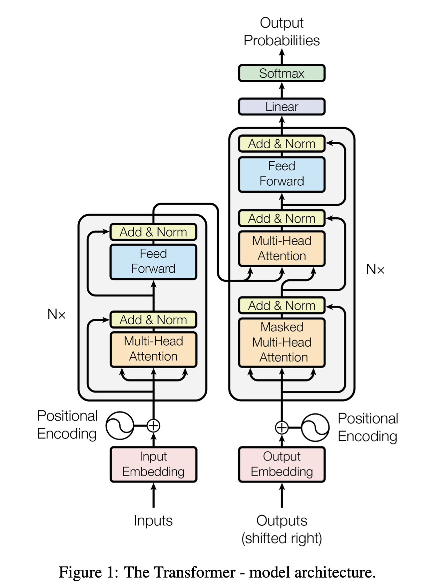
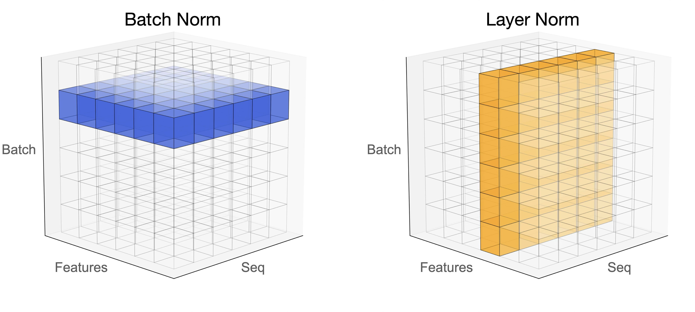
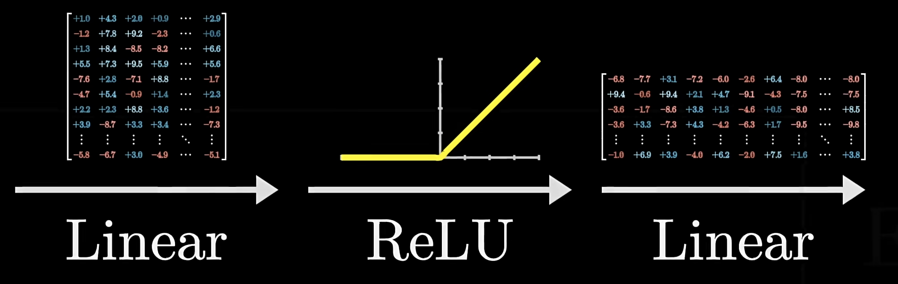
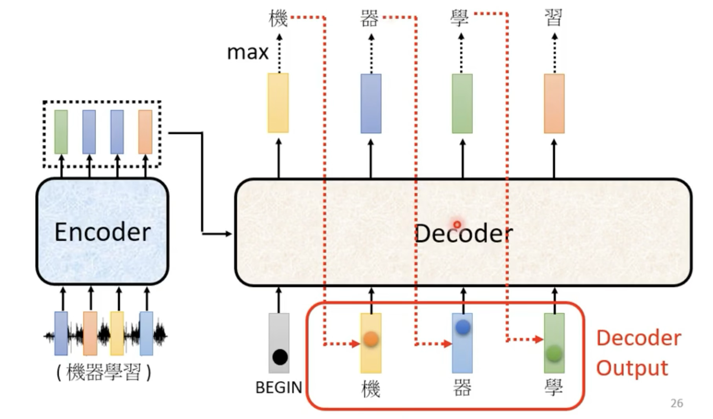
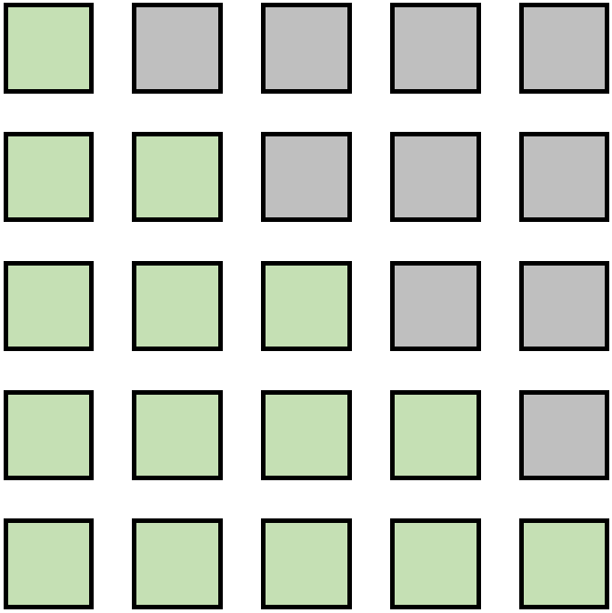
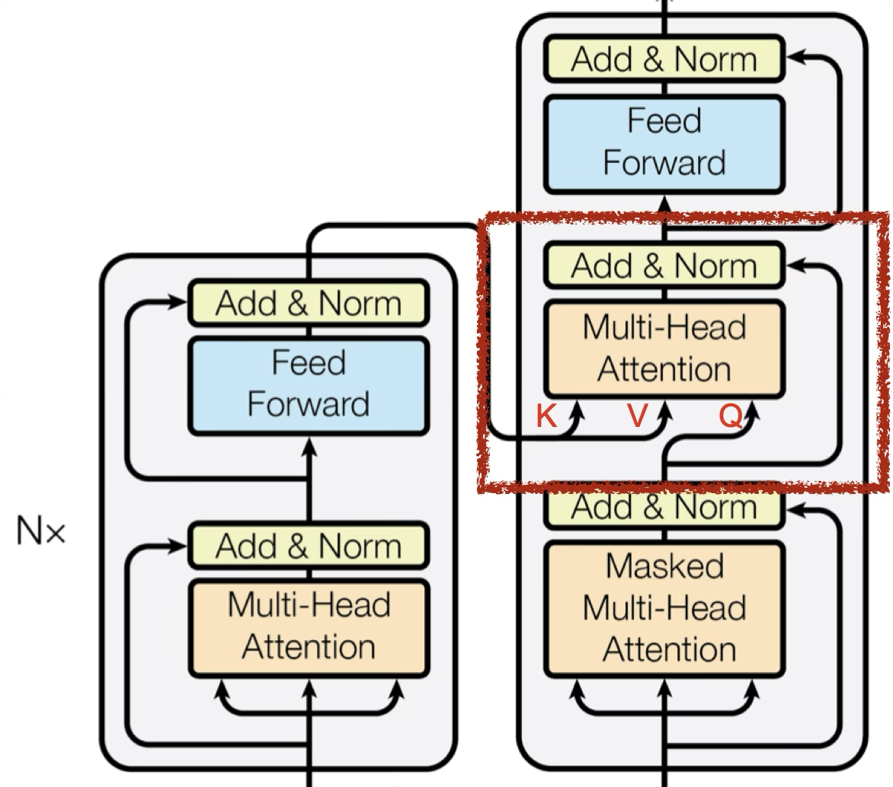
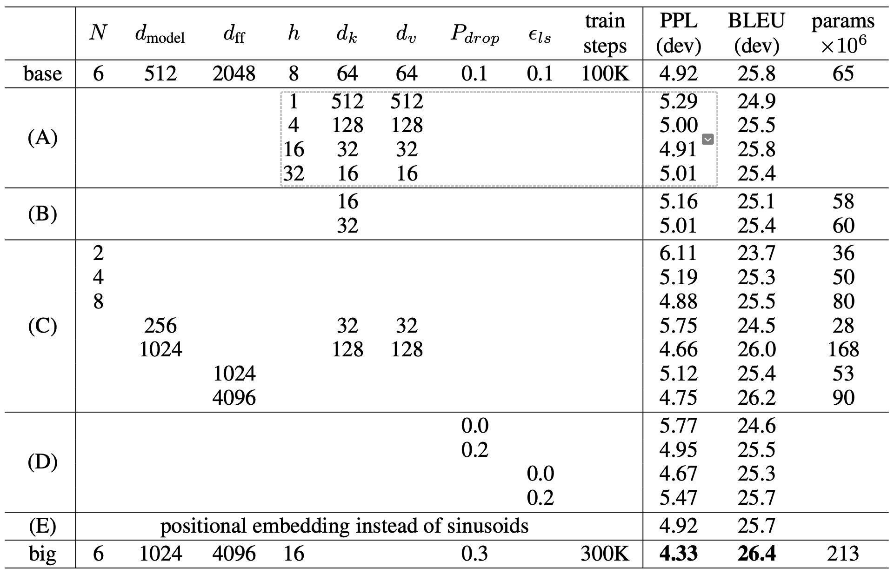

Transformer¶
约 3925 个字 32 行代码 9 张图片 预计阅读时间 16 分钟
Transformer
继 MLP、CNN、RNN 后的第四大类架构
在 NLP，CV、media 等领域都有着广泛的应用，让不同领域的任务都可以使用同一个模型，任何领域的研究者做出的突破，都可以更快速度地被其他领域所使用
人对世界的感知是多模态的，可以使用 Transformer 来处理多模态信息
假设与归纳偏置 ¶
对空间的假设很少，模型非常 simple，可以 train 的参数很少。但抓取数据中信息的能力变差了，所以需要更多的数据，更大的模型。
优点：
- 可并行
- 独立于卷积和循环，完全依赖于 attention 处理全局依赖，解决长距离依赖问题
- 性能强
LSTM 相比于单纯的前馈神经网络，首先具有理解文本的语序关系的能力（RNN
Transformer 进一步解决了 RNN、LSTM 等模型的长距离依赖问题，能够理解更长的上下文语义。可以并行化，所要的训练时间更短。
缺点：
- 长度固定
- 局部信息的获取不如 RNN 和 CNN 强：Transformer 关注的全局关系，而 RNN 在计算过程中更关注局部，对距离更加敏感

图源 Attention is all you need
编码器将输入的符号序列 \((x_1, ..., x_n)\) 映射为连续表示序列 \(z = (z_1, ..., z_n)\)。给定 \(z\)，解码器会一次生成一个符号，最终生成输出序列 \((y_1, ..., y_m)\)（注意 \(m\) 和 \(n\) 不一定相等
在每一步中，模型都是自回归的，即在生成下一个符号时，会将之前生成的符号作为额外的输入。
Encoder - Self Attention¶
需求： 输入一个序列，输出一个序列
Encoder 由六个相同层构成，每层都有两个子层：多头自注意力层和全连接的前馈神经网络层（Linear+relu+dropout+Linear
residual connection¶
其中，\(x\) 是输入，\(\text{Sublayer}(x)\) 是对 \(x\) 应用的子层操作，如自注意力或前馈网络。残差连接有助于解决深度模型中的梯度消失问题，使得更深层次的模型训练成为可能。
为了实现残差连接，需要让输入和输出具有相同的维度
作用：同 resnet，解决梯度消失，防止过拟合 ;
通过直接将输入加到子层的输出上，使得深层网络中的信号能够直接传递到较浅层，有助于缓解梯度消失问题。
Layer Norm¶
BatchNorm 是对一个 batch-size 样本内的每个特征分别做归一化，LayerNorm 是分别对每个样本的所有特征做归一化。

BN 抹杀了不同特征之间的大小关系，但是保留了不同样本间的大小关系；LN 抹杀了不同样本间的大小关系，但是保留了一个样本内不同特征之间的大小关系。
layer normalization: 对每个样本进行归一化，计算 \(m_x\) 和 \(\sigma_x\)，然后归一化 \(x_i' = \frac{x_i - m_x}{\sigma_x}\)
batch normalization: 对每个 feture 进行归一化
为什么什么使用 layer norm 而不是 batch norm
在时序模型当中，我们的样本长度可能会发生变化，使用 batch norm 计算均值和方差，在小批量的情况下，抖动会比较大
另外在预测的时候，如果遇到了极端样本，需要计算全局的均值和方差，使用 batch norm 可能没有见过极端长的样本
layer norm 不需要计算全局的均值和方差，LN 是针对每个样本序列进行归一化，没有样本间依赖，对一个序列的不同特征维度进行归一化。
CV 使用 BN 是因为认为通道维度的信息对 cv 方面有重要意义，如果对通道维度也归一化会造成不同通道信息一定的损失。NLP 认为句子长短不一，且各 batch 之间的信息没有什么关系，因此只考虑句子内信息的归一化
BN 和 LN 的使用场景
在 BN 和 LN 都能使用的场景中，BN 的效果一般优于 LN，原因是基于不同数据，同一特征得到的归一化特征更不容易损失信息。但是有些场景是不能使用 BN 的，例如 batch size 较小或者序列问题中可以使用 LN。这也就解答了 RNN 或 Transformer 为什么用 Layer Normalization？
首先 RNN 或 Transformer 解决的是序列问题，一个存在的问题是不同样本的序列长度不一致，而 Batch Normalization 需要对不同样本的同一位置特征进行标准化处理，所以无法应用；当然，输入的序列都要做 padding 补齐操作，但是补齐的位置填充的都是 0，这些位置都是无意义的，此时的标准化也就没有意义了。
其次上面说到，BN 抹杀了不同特征之间的大小关系；LN 是保留了一个样本内不同特征之间的大小关系，这对 NLP 任务是至关重要的。对于 NLP 或者序列任务来说，一条样本的不同特征，其实就是时序上的变化，这正是需要学习的东西自然不能做归一化抹杀，所以要用 LN。
为什么 layer norm 在 fn 层之后？
Layer Norm 的新研究
position-wise feed-forward network¶
相当于一个 MLP( 线性层 +ReLu+ 线性层 )

- \(x\): 512 维
- \(W_1\): 升维至 2048
- \(W_2\): 降维至 512
attention 层已经含有了想要的信息，进行 MLP 变换的目的是变换到想要的语义空间上去 . 它在每个位置上独立地作用于其输入，有助于增加模型的复杂度和表达能力。
其中，activation 指激活函数，Transformer 最开始用是 ReLU，
之后的模型对这部分有改进，依次是：
现在主流的 LLM 比如 Llama、Qwen 大多采用 SwiGLU
大模型的事实存储在 MLP 层当中
详见 GPT 一节
细节 ¶
self-attention 层只需要学 \(W_Q,W_K,W_V\) 三个矩阵，参数数目是 \(3*d_{model}\)
对于相似的矩阵计算，使用 concat 化简表达
把 V 的参数量 = Q+V 即把 V 做 low rank transformation
Decoder - Autoregressive¶
什么叫做自回归
过去时候的输出，作为现在的输入
有点类似于最近图书馆里面的拼贴诗接龙游戏

图源 李宏毅老师 ppt
需要先给一个开始的信号 —— begin of sentence token，decoder 会吐出一个 vocabulary size 的向量，然后通过 softmax 得到概率分布，然后选择概率最大的 token 作为输出
然后把之前输出的 token 作为输入，继续输出，直到遇到结束的信号 —— end of sentence token
vocabulary size： 需要提前想好你的数据量大小，取决于任务（比如翻译任务，你的 vocabulary 可以是常见的 3000 个汉字）
Mask¶
Mask：不要让后面的 token 影响前面的，在 softmax 之前把左下角矩阵改成负无穷
处理结果，在 \(t\) 时刻的值，只看 \(t-1\) 及之前的 Q、K

why masked
让输入序列只看到过去的信息，而看不到未来的信息。
- 对于 encoder 来说，所有 token 都是可见的，是并行处理的
- 但是对于 decoder 来说，只能看到前面的 token，所以需要 mask。先有 a1，然后有 a2，然后有 a3，然后有 a4，需要把未来的 token 都 mask 掉
长度 ¶
使用 END 表示结束，begin 和 end 是同一个符号
如何输出 END 呢？
Encoder-Decoder¶
Cross-attention¶
交互方式： Cross Self-attention，Decoder提供\(Q\)，Encoder提供\(K\)，\(V\)。

Query 来自下一个 attention 的输入
如果解码器的 Query 与编码器输出的 key 相似度较高，那么给予更高的 attention
相当于根据解码器的输入，去挑选编码器中感兴趣的东西
训练 ¶
参数数量 ¶
Transformer 看起来模型比较复杂，但几乎没有什么可以调节的参数，大部分都是可以根据比例算的。

图源 Attention is all you need
训练方法 ¶
teacher forcing
让 decoder 输出的 distribution 和 ground truth 的 distribution 越接近越好
metrics 是 cross entropy，和分类比较相似
Optimizer¶
学习率预热策略通过逐渐增加学习率，直到达到一个最大值，然后可能会逐渐降低
We used the Adam optimizer with \(\beta_1=0.9,\beta_2=0.98\) and \(\epsilon=10^{-9}.\) We varied the learning rate over the course of training, according to the formula:
This corresponds to increasing the learning rate linearly for the first warmup_steps training steps, and decreasing it there after proportionally to the inverse square root of the step number. We used warmup_steps=4000
Regularization¶
-
residual dropout, \(P_{drop} = 0.1\)：在每个子层（self-attention 和 feed-forward network）的输出处添加 dropout，丢弃率为 0.1。这种 dropout 应用在残差连接之前，可以防止模型过拟合。具体来说：
- 在 self-attention 层和 feed-forward 层的输出上应用 dropout
- 然后再与该层的输入进行残差连接
-
label smoothing：一种正则化技术，起源于 Inception v3。传统的 one-hot 标签 ( 如 \(y = [0,0,1,0]\)) 要求模型输出完全确定的 0 或 1，这可能导致过拟合。Label smoothing 通过将标签值 " 软化 "（如 \(y' = [0.1,0.1,0.7,0.1]\)
） ，使模型学习到更平滑的分布。具体来说 :- 原始 one-hot 标签 : \(y = [0,0,1,0]\)
- 平滑后的标签 : \(y' = (1-\alpha)y + \alpha/K\)
其中 \(\alpha\) 是平滑参数 ( 通常 0.1)，\(K\) 是类别数。这样可以 : 防止模型过于自信，提高泛化能力，增强模型鲁棒性
训练技巧 ¶
参数共享
在 Transformer 模型中，特定层（如编码器中的多个相同层）之间或特定操作（如多头注意力中的头）之间共享参数，可以减少模型的总参数量，有助于减轻过拟合。
梯度裁剪
梯度裁剪通过设定一个阈值 \(\theta\)，将梯度向量 \(g\) 裁剪为：\(g^{\prime}=\min\left(1,\frac\theta{\|g\|}\right)g\) 这样做 是为了防止在训练过程中出现梯度爆炸问题，确保模型的稳定训练。
copy mechanism
User: hello, I'm John.
Machine: hello, John, nice to meet you.
- pointer network
Guided attention
训练 TTS，读四遍“发财”是可以的，但是只读一遍“发财”是不行的
要求机器按照某种特定的方式 attention，需要有一些
- monotonic attention
- location-aware attention
Beam search
greedy decoding 不一定是最好的方法，因为可能错过最优解
而 beam search 是一种受限的宽度优先搜索，有一个超参数 beam width，表示每次搜索的宽度
每一个时刻，保留得分最高的 k 个序列，下一个时刻，使用这些序列继续生成
有时候有用，有时候没用 如果答案非常确定，那么beam search 可能表现不错。
但是，如果答案不明确，那么 beam search 可能表现不好。
BLEU¶
机器翻译的评价指标
minimize cross entropy is not equivalent to maximize BLEU
and using BLEU score as a metric is not a good idea because it's impossible to calc the derivative of BLEU
so when you don't know how to optimize BLEU, use BLEU as the reward function of reinforcement learning
exposure bias¶
推理的时候，decoder 可能看到错误的东西
但是在训练的过程中， 一直看到的是正确的结果
即如何解决一步错，步步错的问题
scheduled sampling
合理的方法是给 decode 一些 noise，让 decoder 看到一些错误的东西
应用 - 机器翻译 ¶
数据集介绍 ¶
Multi30K
Metrics 介绍 ¶
代码实战 ¶
- hyunwoongko/transformer: Transformer: PyTorch Implementation of "Attention Is All You Need"
- jadore801120/attention-is-all-you-need-pytorch: A PyTorch implementation of the Transformer model in "Attention is All You Need"
Transformers 库 ¶
Transformers 是由 Hugging Face 开发的一个自然语言处理库，提供了数千个预训练模型，支持多种深度学习框架如 PyTorch、TensorFlow 等。它的主要特点包括：
- 易用性：提供简单的 API 接口，几行代码就能完成复杂的 NLP 任务
- 灵活性：支持多种深度学习框架，可以根据需要选择
- 完整性：包含了从预处理到模型训练的完整工具链
- 开源社区：有活跃的开源社区支持，持续更新维护
主要功能：
- 文本分类、序列标注、问答系统等常见 NLP 任务
- 支持多语言预训练模型
- 提供模型训练和微调的工具
- 包含数据处理和评估的完整 pipeline
fine-tuning - Using 🤗 Transformers for the first time | Pytorch
Attention is All You Need 论文复现 ¶
选择 hyunwoongko/transformer: Transformer : PyTorch Implementation of "Attention Is All You Need" 进行复现
环境配置问题 ¶
这个库并没有提供requirements.txt，所以需要手动安装，所以会遇到一些奇怪的问题，这里放一下我的解决方案
conda config --add channels conda-forge
conda config --add channels https://mirrors.tuna.tsinghua.edu.cn/anaconda/pkgs/free/
conda config --add channels https://mirrors.tuna.tsinghua.edu.cn/anaconda/pkgs/main/
conda config --add channels https://mirrors.tuna.tsinghua.edu.cn/anaconda/cloud/pytorch/
conda config --add channels https://mirrors.tuna.tsinghua.edu.cn/anaconda/cloud/pytorch/linux-64/
conda config --set show_channel_urls yes
conda create -n transformer python=3.10
conda activate transformer
conda install torchtext==0.13.1
conda install torchdata==0.4.1
遇到了/site-packages/torch/lib/libtorch_cpu.so: undefined symbol: iJIT_NotifyEvent
对 mkl 进行降级
conda install mkl=2024.0
ImportError: /usr/lib/x86_64-linux-gnu/libp11-kit.so.0: undefined symbol: ffi_type_pointer, version LIBFFI_BASE_7.0
ls -l | grep libffi
mv libffi.so.7 libffi_bak.so.7
sudo ln -s /lib/x86_64-linux-gnu/libffi.so.7.1.0 libffi.so.7
ln -s /lib/x86_64-linux-gnu/libffi.so.7.1.0 libffi.so.7
ldconfig
ImportError: cannot import name 'load_dataset' from 'datasets' (unknown location)
pip install datasets
# 或者在 conda 环境中
conda install -c huggingface datasets
’No module named ‘torchtext.legacy’
问题出现原因： 1. torchtext is not compatible with new versions of Numpy 2. torchtext current version don't have "from torchtext.legacy.data import Field, BucketIterator"
解决方法： 修改代码，参照Fixed 'data_loader.py' by Faizanfarhad · Pull Request #35 · hyunwoongko/transformer
OSError: [E050] Can't find model 'de_core_news_sm'. It doesn't seem to be a Python package or a valid path to a data directory.
pip install spacy
python -m spacy download de_core_news_sm
python -m spacy download en_core_web_sm
pip install -U spacy==3.6.0
python -m spacy download en_core_web_sm
python -m spacy download zh_core_web_sm
python -m spacy download de_core_news_sm
wget https://github.com/explosion/spacy-models/releases/download/de_core_news_sm-3.6.0/de_core_news_sm-3.6.0-py3-none-any.whl
wget https://github.com/explosion/spacy-models/releases/download/en_core_web_sm-3.6.0/en_core_web_sm-3.6.0-py3-none-any.whl
wget https://github.com/explosion/spacy-models/releases/download/zh_core_web_sm-3.6.0/zh_core_web_sm-3.6.0-py3-none-any.whl
pip install zh_core_web_sm-3.6.0-py3-none-any.whl de_core_news_sm-3.6.0-py3-none-any.whl en_core_web_sm-3.6.0-py3-none-any.whl
pip install numpy==1.26.4
Could not get the file at http://www.quest.dcs.shef.ac.uk/wmt16_files_mmt/training.tar.gz. [RequestException] None.
wget http://www.quest.dcs.shef.ac.uk/wmt16_files_mmt/training.tar.gz
https://github.com/neychev/small_DL_repo/tree/master/datasets/Multi30k
并将三个文件放在/root/.cache/torch/text/datasets/Multi30k（本目录根据个人有所变化）
但是这一招对我并不管用。
所以我直接修改了data_loader.py，使用本地数据集进行加载
训练结果 ¶
这里使用的是 Multi30K 数据集
en2de 训练结果
拓展 ¶
Decoder - NAT¶
non-autoregressive model
长度如何决定：
- another predictor for output length
- 输出一个超级长的序列，忽略 END 之后的 token
优点：
- 平行计算
- 输出长度可控
缺点：
- 效果不如 autoregressive model
- multi-modality
超长文本 ¶
基于 BERT 的超长文本分类模型 _valleria 的博客 -CSDN 博客 _ 长文本分类
基本思想：对数据进行有重叠的分割，这样分割之后的每句句子直接仍保留了一定的关联信息。 模型由两部分构成，第一部分是fine-tune后的BERT，第二部分是由LSTM+FC层组成的混合模型。即，BERT只用来提取出句子的表示，而真正在做分类的是LSTM+FC部分。
具体流程：首先将长句子分割为多个小句子，如长 200，重叠长度为 50. 将分割后的数据集传入 BERT，分别取每个句子的 [CLS] 表示句子的 embedding，将来自相同长句子的 embedding 拼接，作为长句子的向量表示。最后，将长句子的向量表示传入 LSTM+FC 部分进行分类。
除此之外，第二部分还可以用 Transformer。